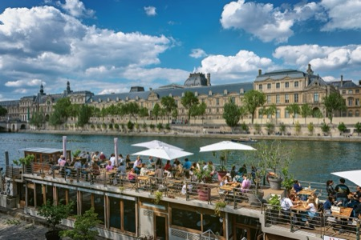
on the Seine, Paris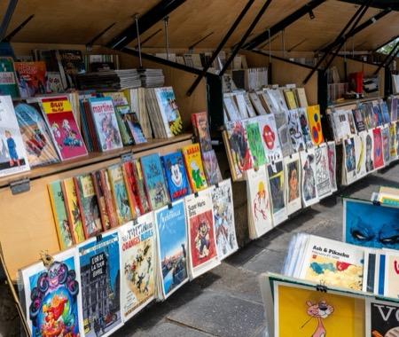
Les Bouquinistes, Paris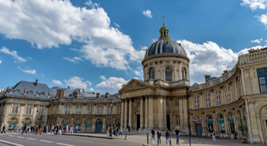
Institut de France, Paris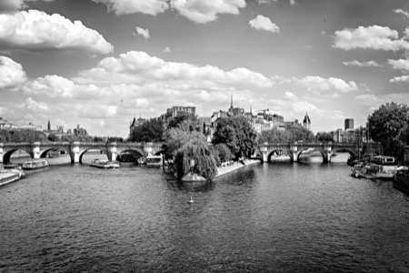
Square du Vert-Galant, Ile de la Cite, Paris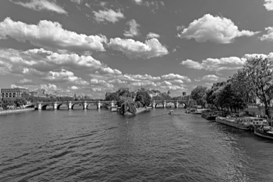
Square du Vert-Galant, Ile de la Cite, Paris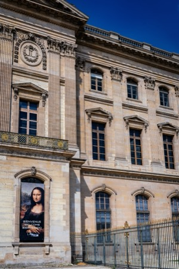
Louvre, Paris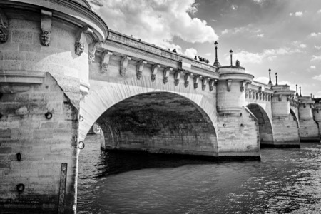
Pont Neuf, Paris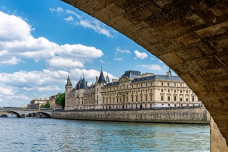
Conciergerie, Paris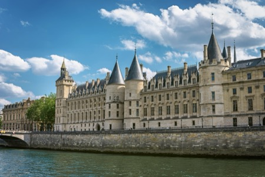
Conciergerie, Paris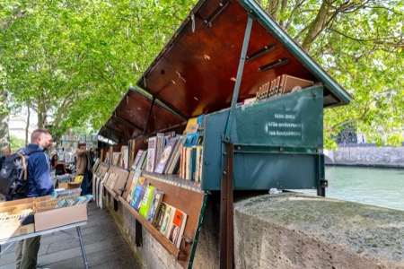
Les Bouquinistes, Paris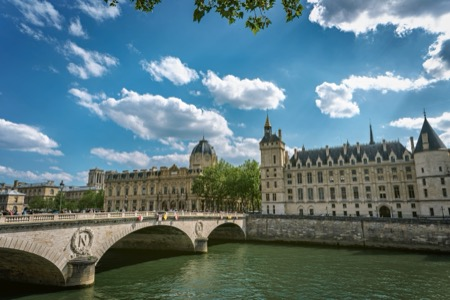
Pont Marie, Paris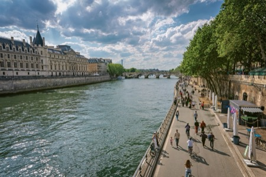
Quai de la Megisserie, Paris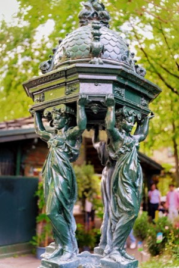
Fontaine Wallace, Paris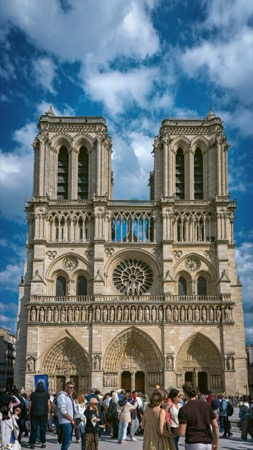
Notre Dame, Paris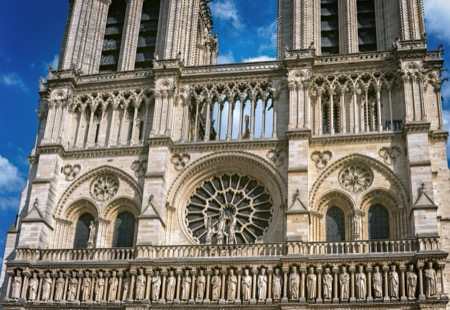
Notre Dame, Paris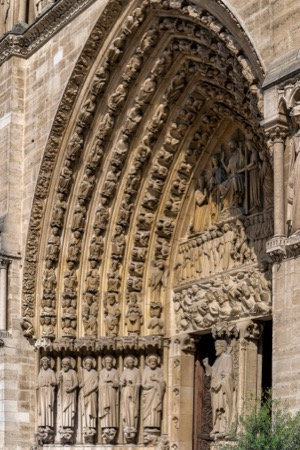
Notre Dame, Paris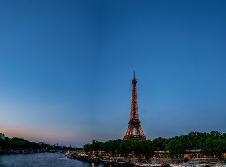
Tour Eiffel, Paris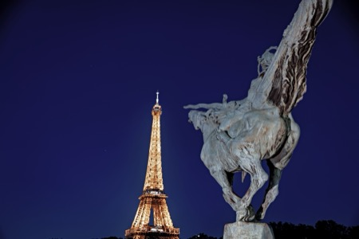
La France Renaissant, Tour Eiffel, Paris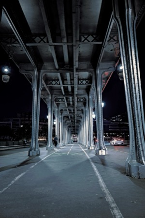
Pont Bir Hakeim, Paris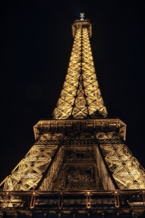
Tour Eiffel, Paris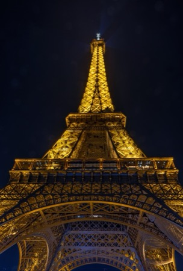
Tour Eiffel, Paris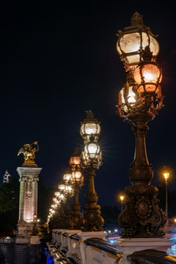
Pont Alexandre III, Paris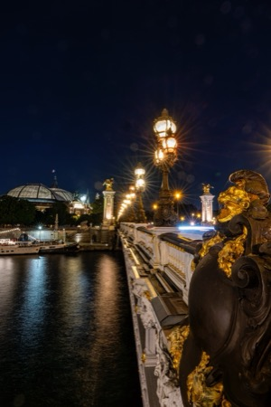
Pont Alexandre III, Grand Palais, Paris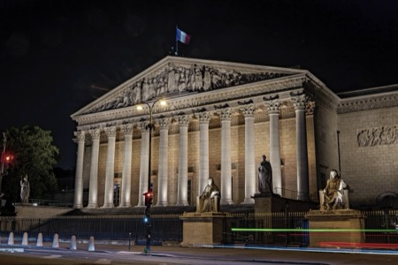
L'Assemblee Nationale, Paris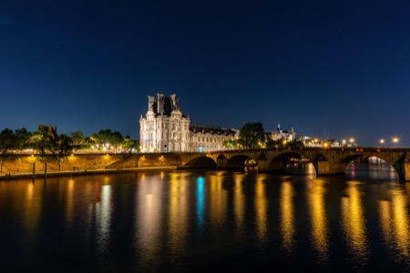
Louvre, Paris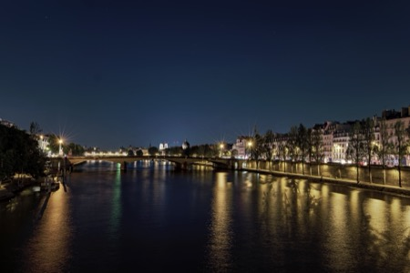
Seine at night, Paris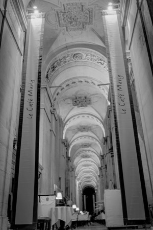
Cafe Marly, Paris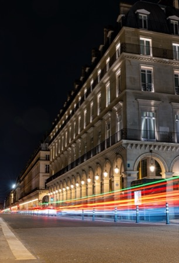
Rue de Rivoli at night, Paris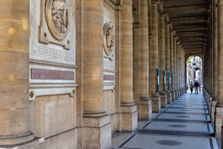
Palais-Royal, Paris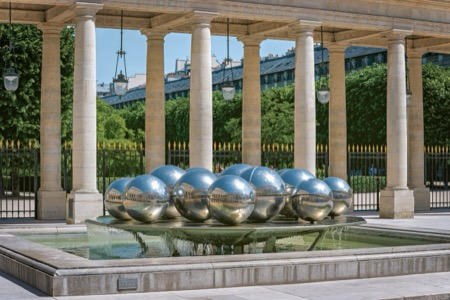
Palais-Royal, Paris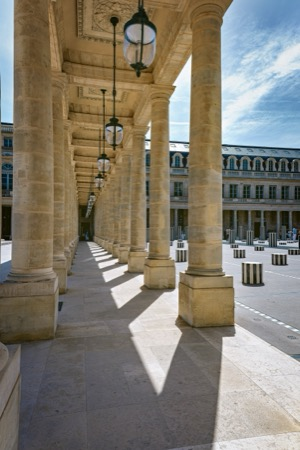
Palais-Royal, Paris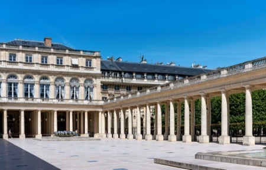
Palais-Royal, Paris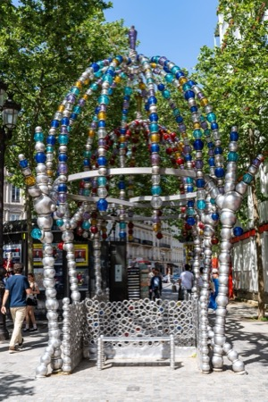
metro 'Palais-Royal', Paris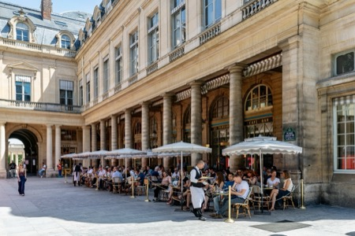
Place Colette, Paris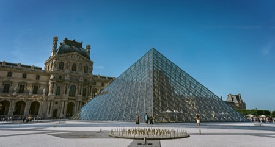
Louvre, Paris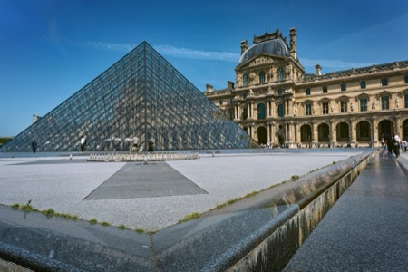
Louvre, Paris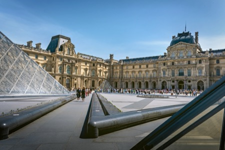
Louvre, Paris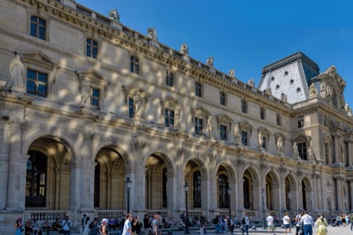
Louvre, Paris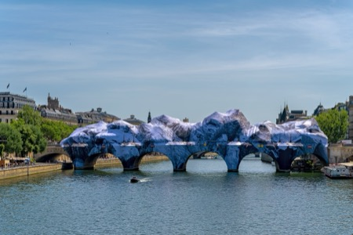
La Caverne du Pont Neuf, Paris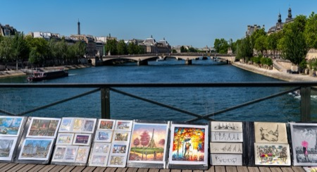
art on the Pont des Arts, Paris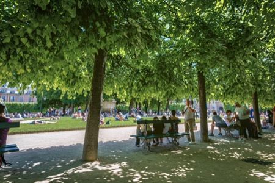
a shady place on the Place des Vosges, Paris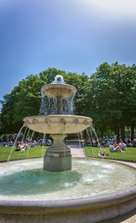
Place des Vosges, Paris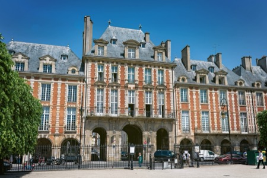
Place des Vosges, Paris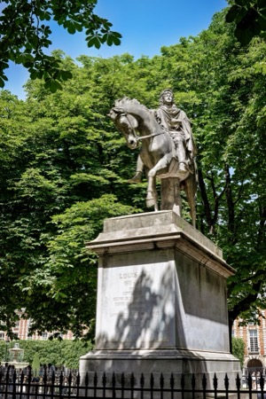
Louis XIII, Place des Vosges, Paris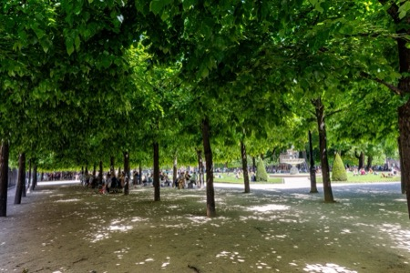
Place des Vosges, Paris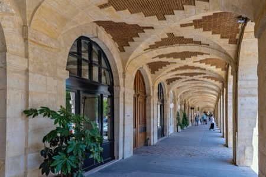
Place des Vosges, Paris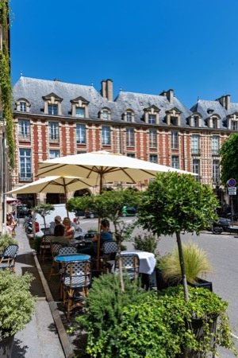
Place des Vosges, Paris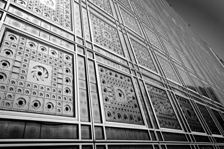
Institut du Monde Arab, Paris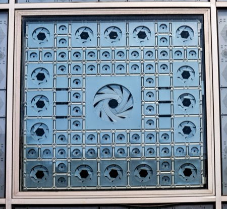
Institut du Monde Arab, Paris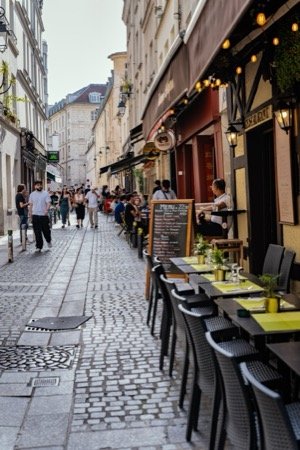
Rue Pot de Fer, Paris